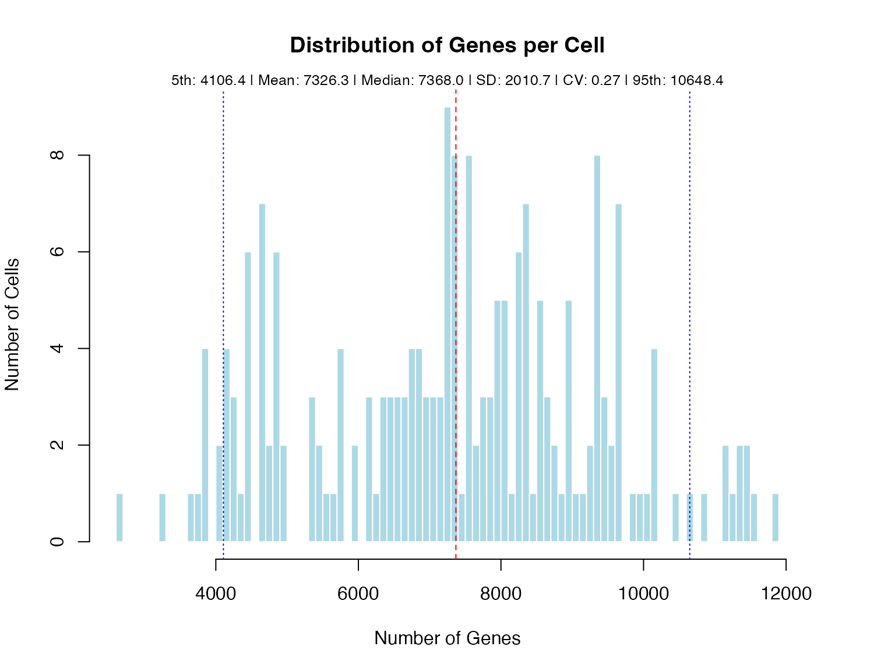

Co-expression Analysis and Isoform Switching
Siyuan Wu & Ulf Schmitz
2025-08-01
Source:vignettes/vignette-05-coexpression.Rmd
vignette-05-coexpression.RmdIntroduction
This vignette demonstrates ScIsoX’s comprehensive co-expression analysis capabilities through the interactive Shiny application, which provides an intuitive interface for exploring isoform relationships, switching patterns, and cell type-specific co-expression.
library(ScIsoX)
library(ggplot2)
# Load example data
data(gene_counts_blood)
data(transcript_counts_blood)
data(transcript_info)
data(sample2stage)
# Create IntegratedSCHT for cell type-specific analysis
integrated_scht <- create_scht(
gene_counts = gene_counts_blood,
transcript_counts = transcript_counts_blood,
transcript_info = transcript_info,
cell_info = sample2stage,
qc_params = list(
min_genes_per_cell = 4000,
max_genes_per_cell = 10000,
min_cells_expressing = 0.02,
min_expr = 1e-6
),
n_hvg = 3000,
require_cell_type = TRUE,
verbose = FALSE
)
#>
#> === Sparsity Analysis for Current Dataset ===
#>
#> 1. Original Transcript Matrix:
#> Number of genes: 55,487
#> Number of isoforms: 142,238
#> Number of cells: 205
#> Non-zero elements: 2,457,789
#> Zero elements: 26,701,001
#> Total elements: 29,158,790
#> Sparsity: 91.57%
#>
#> 2. Filtered Transcript Matrix (Post-QC HVG):
#> Number of genes: 1,936
#> Number of isoforms: 7,327
#> Number of cells: 181
#> Non-zero elements: 73,057
#> Zero elements: 1,253,130
#> Total elements: 1,326,187
#> Sparsity: 94.49%
#>
#> 3. SCHT Structure (Post-QC HVG):
#> Non-zero elements: 73,057
#> Zero elements: 154,780
#> Total elements: 227,837
#> Sparsity: 67.93%
#>
#> 4. Naive 3D Tensor (Post-QC HVG):
#> Required dimensions: 1,936 x 21 x 181
#> Non-zero elements: 73,057
#> Zero elements: 7,285,679
#> Total elements: 7,358,736
#> Sparsity: 99.01%
#>
#> 5. Zero Elements Avoided by SCHT:
#> vs Original Matrix: 26,546,221
#> vs Filtered Matrix: 1,098,350
#> vs Naive 3D Tensor: 7,130,899
#>
#> 6. Memory Efficiency Summary:
#> SCHT uses only 0.78% of original matrix size
#> SCHT uses only 17.18% of filtered matrix size
#> SCHT uses only 3.10% of naive tensor sizeInteractive Co-expression Explorer
Launching the Shiny App
The most comprehensive way to explore co-expression patterns is through ScIsoX’s interactive Shiny application:
# Launch interactive co-expression explorer
launch_coexpression_app(integrated_scht)Features of the Co-expression App
The Shiny app provides:
-
Gene Selection Panel
- Search for any gene by name
- Filter genes by number of isoforms
- Select from pre-defined gene sets
-
Correlation Analysis
- Choose between Pearson, Spearman, or Kendall correlation
- Adjust minimum cell and expression thresholds
- Interactive heatmap with customisable colours
-
Switching Detection
- Set correlation thresholds for switching
- Visualise switching pairs
- Export switching results
-
Cell Type-Specific Analysis
- Compare patterns across cell types
- Identify cell type-specific switching
- Interactive plots for each cell type
-
Export Options
- Download correlation matrices
- Save publication-ready figures
- Export switching pair tables
Programmatic Co-expression Analysis
Basic Analysis Example
While the Shiny app provides comprehensive interactive analysis, you can also perform co-expression analysis programmatically:
# Example: Analyse Mapk13 gene
target_gene <- "Mapk13"
# Calculate isoform correlations
cor_result <- calculate_isoform_coexpression(
integrated_scht,
gene = target_gene,
method = "pearson",
min_cells = 10
)
# View correlation summary
print(paste("Gene:", cor_result$gene))
#> [1] "Gene: Mapk13"
print(paste("Number of isoforms:", cor_result$n_isoforms))
#> [1] "Number of isoforms: 7"
print(paste("Number of cells:", cor_result$n_cells))
#> [1] "Number of cells: 11"
print("\nCorrelation matrix:")
#> [1] "\nCorrelation matrix:"
print(round(cor_result$cor_matrix, 2))
#> ENSMUST00000233984 ENSMUST00000124099 ENSMUST00000129096
#> ENSMUST00000233984 1.00 0.41 0.19
#> ENSMUST00000124099 0.41 1.00 0.84
#> ENSMUST00000129096 0.19 0.84 1.00
#> ENSMUST00000233109 0.31 -0.10 -0.44
#> ENSMUST00000233051 0.47 -0.32 -0.66
#> ENSMUST00000233676 0.78 0.68 0.47
#> ENSMUST00000004986 0.57 0.39 0.12
#> ENSMUST00000233109 ENSMUST00000233051 ENSMUST00000233676
#> ENSMUST00000233984 0.31 0.47 0.78
#> ENSMUST00000124099 -0.10 -0.32 0.68
#> ENSMUST00000129096 -0.44 -0.66 0.47
#> ENSMUST00000233109 1.00 0.55 0.13
#> ENSMUST00000233051 0.55 1.00 0.33
#> ENSMUST00000233676 0.13 0.33 1.00
#> ENSMUST00000004986 0.19 0.44 0.73
#> ENSMUST00000004986
#> ENSMUST00000233984 0.57
#> ENSMUST00000124099 0.39
#> ENSMUST00000129096 0.12
#> ENSMUST00000233109 0.19
#> ENSMUST00000233051 0.44
#> ENSMUST00000233676 0.73
#> ENSMUST00000004986 1.00
# Detect switching patterns
switching_result <- detect_isoform_switching(
cor_result,
threshold = -0.3,
strong_threshold = -0.5
)
print(paste("\nNumber of switching pairs:", switching_result$n_switching_pairs))
#> [1] "\nNumber of switching pairs: 3"
print(paste("Number of strong switching pairs:", switching_result$n_strong_switching))
#> [1] "Number of strong switching pairs: 1"Systematic Analysis
# Analyse multiple genes
selected_genes <- c("Atl1", "Irf8", "Mx1", "Mapk13", "Crb3")
# Summary of switching patterns
switching_summary <- data.frame()
for (gene in selected_genes) {
tryCatch({
cor_res <- calculate_isoform_coexpression(scht_obj, gene, min_cells = 10)
switch_res <- detect_isoform_switching(cor_res)
switching_summary <- rbind(switching_summary, data.frame(
gene = gene,
n_isoforms = cor_res$n_isoforms,
n_switching_pairs = switch_res$n_switching_pairs,
n_strong_switching = switch_res$n_strong_switching,
stringsAsFactors = FALSE
))
}, error = function(e) NULL)
}
print(switching_summary)
#> data frame with 0 columns and 0 rowsCell Type-Specific Analysis
Understanding Cell Type Patterns
For cell type-specific co-expression analysis, the Shiny app provides:
- Side-by-side comparisons of correlation matrices across cell types
- Interactive selection of cell types to compare
- Highlighting of cell type-specific switching pairs
- Export of cell type-specific results
Advanced Features in the Shiny App
Conservation Analysis Tab
The Shiny app includes a dedicated tab for conservation analysis:
- Multi-gene selection: Analyse conservation patterns across multiple genes
- Threshold adjustment: Interactively set conservation thresholds
- Visualisation options: Heatmaps, dendrograms, and network views
- Export conservation scores: Download results for further analysis
Tips for Using the Shiny App
Common Use Cases
Use Case 1: Identifying Isoform Switches During Differentiation
The Shiny app is particularly useful for: - Tracking isoform usage changes across developmental stages - Identifying key switching events - Comparing patterns between lineages
Troubleshooting the Shiny App
Common Issues
-
App won’t launch
- Ensure all required packages are installed
- Check that your object is an IntegratedSCHT
- Verify sufficient memory for your dataset
-
Slow performance
- Reduce number of genes in analysis
- Increase min_cells threshold
- Use sampling for large datasets
-
No results displayed
- Check gene names match your data
- Verify minimum expression thresholds
- Ensure sufficient cells per cell type
Exporting Results from the Shiny App
The app provides multiple export options:
Available Export Formats
-
Correlation Matrices
- CSV format for further analysis
- RDS format to preserve R object structure
-
Switching Results
- Table of switching pairs
- Summary statistics
-
Visualisations
- High-resolution PNG/PDF
- Customisable dimensions
- Publication-ready figures
-
Complete Analysis Reports
- HTML reports with all results
- Includes methods and parameters
- Reproducible analysis record
Programmatic Export
# After running analysis in the app, you can also export programmatically
if (exists("ct_coexp")) {
# Export to temporary directory
export_result <- export_coexpression_results(
ct_coexp,
output_dir = tempdir(),
gene_name = "Atl1",
format = "csv"
)
print(paste("Results exported to:", export_result$output_dir))
}Summary
The ScIsoX Shiny application provides a comprehensive, user-friendly interface for co-expression analysis. Whether you’re exploring a single gene or conducting systematic analyses across cell types, the app streamlines the workflow and provides publication-ready outputs.
For more advanced programmatic analysis, the underlying functions
(calculate_isoform_coexpression,
detect_isoform_switching, etc.) remain available for custom
workflows and batch processing.
Session Information
sessionInfo()
#> R version 4.4.3 (2025-02-28)
#> Platform: aarch64-apple-darwin20
#> Running under: macOS Sequoia 15.5
#>
#> Matrix products: default
#> BLAS: /Library/Frameworks/R.framework/Versions/4.4-arm64/Resources/lib/libRblas.0.dylib
#> LAPACK: /Library/Frameworks/R.framework/Versions/4.4-arm64/Resources/lib/libRlapack.dylib; LAPACK version 3.12.0
#>
#> locale:
#> [1] en_US.UTF-8/en_US.UTF-8/en_US.UTF-8/C/en_US.UTF-8/en_US.UTF-8
#>
#> time zone: Australia/Brisbane
#> tzcode source: internal
#>
#> attached base packages:
#> [1] stats graphics grDevices utils datasets methods base
#>
#> other attached packages:
#> [1] ggplot2_3.5.2 ScIsoX_1.1.1
#>
#> loaded via a namespace (and not attached):
#> [1] bitops_1.0-9 gridExtra_2.3
#> [3] rlang_1.1.6 magrittr_2.0.3
#> [5] clue_0.3-66 GetoptLong_1.0.5
#> [7] ggridges_0.5.6 matrixStats_1.5.0
#> [9] compiler_4.4.3 png_0.1-8
#> [11] systemfonts_1.2.1 vctrs_0.6.5
#> [13] pkgconfig_2.0.3 shape_1.4.6.1
#> [15] crayon_1.5.3 fastmap_1.2.0
#> [17] XVector_0.46.0 promises_1.3.3
#> [19] Rsamtools_2.22.0 rmarkdown_2.29
#> [21] UCSC.utils_1.2.0 ragg_1.4.0
#> [23] purrr_1.1.0 xfun_0.52
#> [25] zlibbioc_1.52.0 cachem_1.1.0
#> [27] GenomeInfoDb_1.42.3 jsonlite_2.0.0
#> [29] progress_1.2.3 later_1.4.2
#> [31] DelayedArray_0.32.0 BiocParallel_1.40.0
#> [33] parallel_4.4.3 prettyunits_1.2.0
#> [35] cluster_2.1.8.1 R6_2.6.1
#> [37] bslib_0.9.0 RColorBrewer_1.1-3
#> [39] rtracklayer_1.66.0 car_3.1-3
#> [41] GenomicRanges_1.58.0 jquerylib_0.1.4
#> [43] diptest_0.77-1 Rcpp_1.1.0
#> [45] SummarizedExperiment_1.36.0 iterators_1.0.14
#> [47] knitr_1.50 IRanges_2.40.1
#> [49] httpuv_1.6.16 Matrix_1.7-3
#> [51] tidyselect_1.2.1 viridis_0.6.5
#> [53] rstudioapi_0.17.1 abind_1.4-8
#> [55] yaml_2.3.10 miniUI_0.1.1.1
#> [57] doParallel_1.0.17 codetools_0.2-20
#> [59] curl_6.4.0 lattice_0.22-6
#> [61] tibble_3.3.0 plyr_1.8.9
#> [63] withr_3.0.2 shiny_1.11.1
#> [65] Biobase_2.66.0 evaluate_1.0.4
#> [67] moments_0.14.1 desc_1.4.3
#> [69] circlize_0.4.16 mclust_6.1.1
#> [71] Biostrings_2.74.1 pillar_1.11.0
#> [73] MatrixGenerics_1.18.1 carData_3.0-5
#> [75] DT_0.33 foreach_1.5.2
#> [77] stats4_4.4.3 plotly_4.11.0
#> [79] generics_0.1.4 RCurl_1.98-1.16
#> [81] S4Vectors_0.44.0 hms_1.1.3
#> [83] scales_1.4.0 xtable_1.8-4
#> [85] glue_1.8.0 lazyeval_0.2.2
#> [87] tools_4.4.3 BiocIO_1.16.0
#> [89] data.table_1.17.8 ggradar_0.2
#> [91] GenomicAlignments_1.42.0 fs_1.6.6
#> [93] XML_3.99-0.18 cowplot_1.2.0
#> [95] grid_4.4.3 tidyr_1.3.1
#> [97] colorspace_2.1-1 patchwork_1.3.0
#> [99] GenomeInfoDbData_1.2.13 restfulr_0.0.15
#> [101] Formula_1.2-5 cli_3.6.5
#> [103] textshaping_1.0.0 S4Arrays_1.6.0
#> [105] viridisLite_0.4.2 ComplexHeatmap_2.22.0
#> [107] dplyr_1.1.4 gtable_0.3.6
#> [109] sass_0.4.10 digest_0.6.37
#> [111] BiocGenerics_0.52.0 ggrepel_0.9.6
#> [113] SparseArray_1.6.2 rjson_0.2.23
#> [115] htmlwidgets_1.6.4 farver_2.1.2
#> [117] htmltools_0.5.8.1 pkgdown_2.1.3
#> [119] lifecycle_1.0.4 httr_1.4.7
#> [121] mime_0.13 GlobalOptions_0.1.2
#> [123] ggExtra_0.10.1 MASS_7.3-65